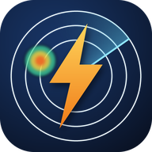

teď
◀
▶
▶▶
½×
1×
2×
—
Průhlednost
70 %
🌍 Svět
🛰️ Družice
🌬️ Vítr
🌊 Hladiny

nowcast
↺
—
Srážky · 120 minut
radar + model
teď
+30
+60
+90
+120
Zvolte místo
—
—
Vyhledejte obec, klikněte do mapy nebo použijte polohu.
↵
Aktivity dnes
z hodinových dat
⇄ Porovnat s jiným místem
☆ Uložit místo
🔕 Zapnout upozornění
🔗 Sdílet
🖼 Embed
24 hodin —
—
Meteogram
Přehled
Srážky
Vítr
Tlak
Ens.
7 dní —
—
Obloha & astro
❄️ Zimní podmínky
📜 Tento den v historii
Offline — ukazuji poslední data
⚡ blesky
—
—
● ČHMÚ
✕
✕
Nastavení
✕
Výchozí vrstva stanic
🌡️ Teplota
🌫️ Rosný bod
💧 Vlhkost
🌬️ Vítr
🌧️ Srážky/hod
❄️ Sníh
🔵 Tlak
☀️ Záření
👁️ Viditelnost
Rychlost animace radaru
½× pomalá
1× normální
2× rychlá
Upozornit na srážky od
jakýchkoli (0,2 mm/h)
mírného deště (2,5 mm/h)
jen vydatného (7,5 mm/h)
Deník upozornění
⇄ Porovnání míst
✕
🌩️ Nejbližší jádro:
—
Intenzita (dBZ)
🌡️ Teplota
🌫️ Rosný bod
💧 Vlhkost
🌬️ Vítr
🌧️ Srážky/hod
❄️ Sníh
🔵 Tlak
☀️ Záření
👁️ Viditelnost